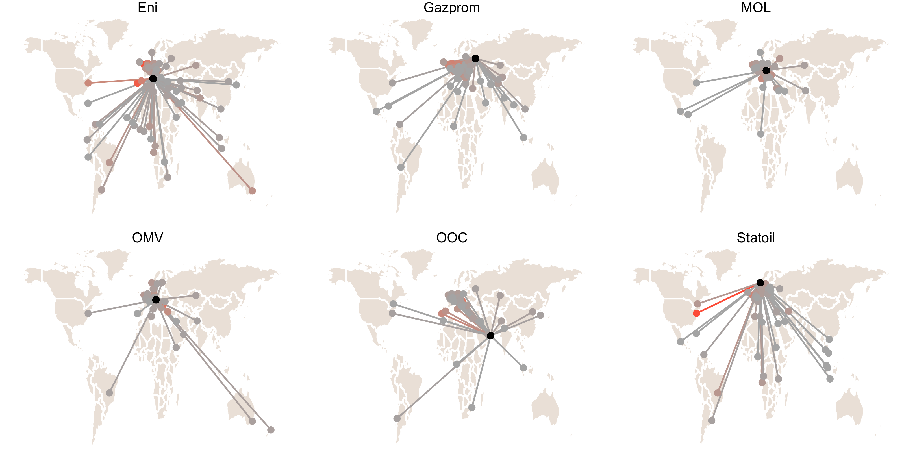

Chapter 1 What is NOC Internationalization?
1.1 Introduction
In December of 2014, the Russian government engaged a drastic interest rate hike in the hopes of defending the ruble. There are a number of reasons for the Russian currency’s precipitous decline in recent months — these include the stock market cost of military adventurism in Ukraine and the general decline in oil prices. The drop in the ruble’s value in mid-December, however, has been linked by observers to an “opaque deal involving the central bank and the state-controlled oil company, Rosneft”" (Kramer, 2014). The oil company, The New York Times goes on to report, “had been clamoring for months for a government bailout to refinance debt the company ran up while making acquisitions when oil prices were high.”
A little earlier in the year, news broke in Canada that a major corruption and embezzlement scandal within the state-owned China National Petroleum Corporation (CNPC) would slow a project in Alberta’s Athabasca oil sands involving its subsidiary PetroChina (Jones, 2014). Political intrigue at home became a major story in the resource-rich Canadian province. More broadly, Chinese state-owned firms are under intense scrutiny for the declining value of their recent purchases in the Albertan oil sands. China isn’t the only foreign state investing in the oil sands: all of the top ten foreign investment deals in the Canadian energy industry have been made by state-owned firms, and six of those involved a non-Chinese state-owned enterprise.1
Risky investments and corruption intrigue are part of the story for all types of business; what these stories capture, anecdotally at least, are some of the complications of state-ownership over large economic entities. They also hint at an increasingly-important underlying phenomena: the international exposure of Rosneft and PetroChina are specific illustrations of the international investment and activity engaged in by state-owned energy firms (SOEs).
These anecdotes distill key themes this research aims to investigate empirically. At the core of each is the efforts of a state-owned oil company to acquire an international asset. While in these illustrative stories this attempt was ultimately unsuccessful, NOCs have in fact been active players in the international economy, buying and selling assets at all points in the oil & gas value chain. Some, but certainly not all, NOCs have made efforts to grow internationally. The observable variation in this process of internationalization, and explanations as to its origins and features, are at the core of this study. What is NOC internationalization? How extensive is it? How does it differ from the internationalization pursued by non-state-owned energy firms?
The second key theme these anecdotes express is that this process of internationalization can have a highly salient, even controversial, political component to it. Large cross-border acquisitions always have at least the potential to be politically charged; this is especially true when the acquiring entity is intrinsically linked to a foreign government. Even the potential for political influence regularly raises hackles. Worried observers and regulators may not always be able to explicitly define the nature of their concern about this state influence, but they acknowledge and act on the basis of it nonetheless. This political component deserves careful analytic attention. The investment activity of SOEs is a significant element in their already well established identities as international political actors. Oil & gas CEOs, energy ministers, and top regulatory officials feature prominently in the daily record of global politics. While the best known brands in international energy are private multinationals — Royal Dutch Shell, BP, Exxon Mobil — firms owned by state actors wield substantial influence. SOEs occupy 7 of the top 10 spots in Forbes’ 2019 of largest oil & gas firms; the top three spots are all held by SOEs. The contemporary reality is that the majority of global fossil fuels are produced by large firms owned by the state. We think of these firms for the most part as sellers, supplying less well-endowed states with the raw materials integral to building and sustaining a modern economy, but they are increasingly active as buyers and investors as well. This activity is a critical component of the international economic system, and has critically important international political consequences.
Addressing questions about NOC internationalization is important. However, our ability to systematically understand this process of NOC internationalization, and make sense of its political salience, has to date been hampered by a lack of good data on the subject. Internationalization is in fact an accumulation of specific acquisitions, mergers, and subsidiary creation events spread across a diverse set of internationalizing and target entities. Transactions of this nature are difficult to capture, especially when they occur in jurisdictions with less onerous reporting and filing regulations than the United States or Western Europe.
In this paper I introduce a new dataset of internationalization in the energy sector, one that focuses on the corporate hierarchies of oil & gas firms.2 Rather than focusing on transactions, this dataset exploits the detailed corporate hierarchy information that financial databases have accumulated over time on major economic entities. This dataset captures the first order subsidiaries of all NOCs, and a sample of the most important privately owned (or publicly traded) oil & gas firms globally. These data capture internationalization in a global network of parent and subsidiary relationships.
These data represent a significant addition to empirical efforts to capture and analyze NOC internationalization, pursued in recent years by researchers at the intersection of political economy and business studies. Researchers have addressed the substantive questions at hand with a variety of empirical approaches. Several have pursued within-country analyses leveraging detailed firm-level data to address questions of internationalization within the context of a specific state (eg. Bass & Chakrabarty, 2014; Cui & Jiang, 2012; Knutsen, Rygh, & Hveem, 2011; M. H. Li, Cui, & Lu, 2014). Others have utilized qualitative methods to enable theory-development in the context of a few key cases (eg. Jones Luong & Sierra, 2015). A few studies leverage transaction-level mergers and acquisitions data to enable cross-national analysis (Cheon, 2019; Clò, Fiorio, & Florio, 2016). There are benefits and disadvantages to each of these empirical approaches; a more complete discussion of how the new data introduced in this chapter relate to existing datasets is undertaken in section (1.3).
Using these data, we develop a set of novel findings that improve or understanding of NOC internationalization. - The majority of NOCs have acquired or established at least one international international subsidiary; 80% of NOC subsidiaries are owned by 10% of iNOCs. - NOCs that have internationalized have done so in a set of discrete and identifiable patterns, allowing us to generate a typology of NOC internationalization - NOC internationalization differs systematically from IOC internationalization: NOCs establish an international subsidiary network in politically-similar, geographically adjacent states. - NOCs are less likely than IOCs to pursue JVs or other shared partnerships, preferring wholly-owned vehicles - NOCs are just as likely to acquire or establish subsidiaries for resource extraction as for other prospects down the energy value chain, such as refining or distribution.
Together, these findings represent a significant improvement in our foundational understanding of how NOCs operate across borders in the contemporary economy. NOCs are some of the most materially significant economic entities operating today: they control X% of known oil & gas reserves, and 8/10 of the Fortune 500 2018 list. Establishing the empirical contours of how they exist as international actors is an essential part of properly accounting for their role in theories of economic nationalism, globalization, foreign direct investment flows, and domestic economic and political development (resource-influenced or otherwise). From a political economy perspective, the case can be made that contemporary state capitalism and economic nationalism are under-theorized. A better empirical understanding of some of the most important entities in this context is an essential part of rectifying that lack. A further discussion of these points is developed in Section 1.5.
This chapter proceeds as follows. In the next section (1.2) we motivate this research by discussing the state of the literature on NOC internationalization. While some political scientists are investigating this problem set, the bulk of contemporary work on the international dimensions of state-ownership lie in business studies. This relative neglect from political scientists is unwarranted, we argue, and a renewed focus stands as a nice complement to existing comparative strands of research. We also spend some time motivating the empirical approach taken in this paper in light of existing efforts to understand these phenomena.
Section 1.3 introduces our dataset more fully. We discuss the data collection method, address specific areas of improvement over existing or complementary datasets, and conduct some preliminary exploratory analysis to establish a clear basis for proceeding.
Section 1.4 utilizes the dataset introduced in the preceding section to improve our understanding of NOC internationalization along a number of complementary empirical (albeit descriptive rather than strictly inferential) lines. It also investigates a central hypotheses: does NOC status has a substantive and statistically significant relationship with subsidiary political affinity? In order to test this hypothesis, we leverage state dyad ideal points data coded by Bailey, Strezhnev, & Voeten (2017). A more complete discussion of these data is provided in the empirical approach section.
The concluding section (1.5) discusses the implications, as well as the limitations, of this research. It also explicitly connects this research with other salient lines of inquiry, several of which are pursued in distinct chapters within this study.
1.2 Motivation
This section has three primary objectives. First, it provides a brief introduction to national oil companies (NOCs) and situates them within existing political economy and business studies research, touching on general approaches but focusing in particular on the studies that aim to improve our understanding of internationalization in particular. In this discussion, our aim is to clearly establish the importance of NOC internationalization as an area of study for political economists. Second, as part of this literature review, we aim to establish the state of empirical research into the NOC internationalization as transparently as possible, establishing the need for and value of the novel data this paper introduces in the subsequent section. Third, this section introduces a number of open empirical questions concerning NOC internationalization that have to this point not been adequately addressed. These questions form the basis for the analysis developed in Section 1.4.
1.2.1 What are National Oil Companies?
National Oil Companies (NOCs) are firms that operate in the hydrocarbon sector and are wholly or partially owned by the state.3 NOCs are geographically dispersed, though they are more dominant in some regions than in others. There are 88 NOCs currently in operation.
NOCs are generally primarily responsible for the stewardship and development of domestic oil and gas reserves. Out of the top 10 countries raked by proven crude oil reserves, Canada is the only state without an NOC.4 NOCs can take primary responsibility for resource extraction (drilling, etc.) though some also contract these activities out to third parties (other large oil & gas firms). Many NOCs also operate at other points in the hydrocarbon value chain, including refining, transportation (shipping and pipelines), and even consumer sales (Mexico’s PEMEX, for instance, has a national chain of vehicle gas stations). NOCs are not restricted to operating in the oil & gas sectors, either: some own subsidiaries or investment arms that operate in very different commercial sectors such as electricity grid management, or real estate. NOCs can be the most significant contributor to the economy and the largest employer, as in the case of Saudi Arabia’s Saudi Aramco; others feature regularly in state-to-state diplomatic exchanges, as in the case of Russia’s Gazprom. Others invest heavily in brand placement, such as Malaysia’s Petronas and its Formula One sponsorship.
Just as NOCs vary in terms of their operations and corporate focus, they vary with respect to the practicalities of state-ownership as well. Many operate under the purview of a Ministry of Energy, where ultimate authority for the firm’s operations rests on an elected (or appointed) government minister. Others slot into a bureaucratic function and are insulated from elected decision-makers. Still others see their boards and leadership positions staffed by close associates or family members of a ruling clan, or serve as patronage opportunities for loyalists. States may have an interest in actively managing the affairs of the firm, or may prefer to let the firm work at arms-length from political functions so that it can operate as a purely economic actor.
1.2.2 What do we know about NOCs?
Academic research into NOCs can be roughly grouped into four categories. First, scholarship across several disciplines has sought to address the question of why NOCs exist in the first place. The earliest of these focus on the historical genesis of NOCs as oil supply managers and evolution into production and export businesses. Many focus on explaining why states rely on state-owned firms instead of a competitive market for production and distribution (eg. Tordo, 2011). Recent scholarship in this vein focuses on the nationalization process that generated many NOCs (Mahdavi, 2014). Many of these studies focus on a particular region and draw comparisons across a limited set of NOCs (eg. Marcel & Mitchell, 2006).
Second, a body research — developed in particular, but not exclusively, by applied economists — has investigated the economic activity of NOCs. Many of these studies examine and compare the efficiency and effectiveness of NOCs as economic entities, particularly in relation to non-state owned peers (Eller, Hartley, & Medlock III, 2011; eg. P. Hartley & Medlock III, 2008; Nolan & Thurber, 2012; Thurber, Hults, & Heller, 2011). A useful review of both of these first literatures, focusing on historical genesis and economic efficiency, can be found in Victor (2013).
Hydrocarbons are a foundational component to modern political science5, but political scientists have devoted limited attention to NOCs in particular. This lack of attention is surprising, given that NOCs are one of the most important institutions at the intersection of hydrocarbon wealth and the state. Some exceptions exist. Jones Luong & Sierra (2015) argue that ownership institutions — NOCs most prominent among them — are essential to understanding the causal process that connects hydrocarbon endowments with outcomes like economic and political development6. Cheon, Lackner, & Urpelainen (2014) examine some of the ways that states can use their NOCs strategically for domestic ends, in particular by insulating domestic consumer markets from adverse trends in oil prices. Strategic concerns and political economy also feature prominently in some of the core omnibus analyses of NOCs (Marcel & Mitchell, 2006; eg. Victor, Hults, & Thurber, 2012). Overall, however, research into NOCs continues to be marginal in political science and political economy.7
This relative lack of attention extends to international relations and international political economy. While NOC internationalization has drawn some interest from the popular press,8 relatively few political economists have addressed the phenomenon of NOCs expanding into international markets. The bulk of academic work in this area has been pursued by business studies scholars. This research addresses a number of key questions related to NOC internationalization Many of these studies leverage detailed Chinese firm-level outbound foreign direct investment (FDI) data to test their hypotheses. Cui & Jiang (2012) find that state ownership modifies how Chinese firms engage in FDI, in particular by increasing the degree to which these firms conform to target market institutional pressures9. Liang, Ren, & Sun (2014) unpack state control, finding evidence that formal and informal mechanisms of control and influence have varying effects on Chinese state-owned outward FDI. Duanmu (2014) find that state-ownership may help investing firms counter the risk of expropriation through the political influence of their state owner. Pan et al. (2014) find that state ownership moderates investing firms’ preference for high ownership states in favorable target markets: firms that have higher levels of state ownership (exercised through both formal and informal channels) demonstrate weaker preferences for high ownership in favorable markets (and for low ownership in less favorable markets)10. Li, Meyer, Zhang, & Ding (2017) examine the value of diplomatic channels in establishing international business relationships: state-owned firms with stronger ties to their home state leverage diplomatic relationships more extensively when establishing a foreign subsidiary, and will use these relationships to inform the choice of target market. Many of these research strands are usefully summarized in Buckley et al. (2018).
Beyond the Chinese context, Bass & Chakrabarty (2014) find that state-owned enterprises (SOEs) focus their international investments on (and pay more for) exploration, arguing that this is primarily motivated by resource scarcity and security concerns on the home (investing) state’s side of the investment. Choudhury & Khanna (2014) modify this standard resource dependence theory in a novel way, utilizing Indian firm-level data to find evidence that SOEs engage in internationalization to improve their strategic position and independence from other state institutions (ministries, agencies, etc.).
M. H. Li et al. (2014) develop (but do not empirically evaluate) an extensive set of theories focused on explaining the link between institutional variation (“varieties of state capitalism”) and outward international investment: their core contribution is in creating a typology of SOE organizational variation. Mohr, Wang, & Fastoso (2016) find that resource dependence isn’t just a reason for state-owned firms’ outward investment: international joint ventures with a state-owned party reduces the risk of joint venture dissolution as well. Musacchio & Lazzarini (2014) focus on Brazil to produce one of the most extensive and interesting recent treatments of contemporary state capitalism.
Several recent studies extend this line of inquiry into political science properly speaking. Jones Luong & Sierra (2015) focus on variation in Latin American NOCs to argue that patterns of internationalization can be explained by the interaction of two variables: the nationalization process that formed the firm in the first place, and the historical convergence of state and firm interests regarding internationalization. Meckling, Kong, & Madan (2015) utilize Indian (and Chinese) data to argue that NOC internationalization is impacted by the balance of cooperation and conflict that exists between the state and the firm in question. Chalmers & Mocker (2017) contest the basic view that SOEs are more risk-acceptant in their choice of investment target: they find that risk acceptance varies depending on whether the firm or the state primarily owns that risk. Finally, Cheon (2019) leverages a cross-national dataset of NOC mergers & acquisitions transactions to argue that domestic politics explain NOC internationalization: greater levels of partisan competition domestically reduce state tolerance for investment risk, and by extension appetite for expansion. We discuss the empirical basis for each of these studies in more detail in Section 1.3. The objective of Chapter 2 is to directly engage with the theoretical arguments contained in this literature.
1.2.3 NOC internationalization: opportunities for research
We can draw at least three conclusions from this survey.
First, there is no good reason for the neglect of National Oil Companies in political science research. They sit in a key place, substantively and theoretically, for some of the most important topics in the field (the resource curse, energy security). As institutions, they marry political and economic influences and processes in a variety of organizational forms, and continue to be the most salient and influential evidence of robust state capitalism in the contemporary economy. When we consider their international expansion in particular, as an set of activity it is substantial enough to have made a major impact on the global market for oil & gas, and instances of NOC investment regularly receive intense scrutiny from the popular press and from political actors themselves. Scholars in adjacent disciplines have built a robust literature explaining NOC internationalization with reference to a set of explicitly political variables of interest.
Second, our empirical understanding of NOCs, and NOC internationalization in particular, can and should be improved. The bulk of existing research, regardless of discipline is built on single-country analyses or small-n case comparisons. As such, the generalizability of many of the arguments and theories this research puts forward has yet to be meaningfully evaluated. This empirical weakness, driven primarily by the lack of high quality cross-national data on the subject, is likely a contributor to the fact that political economists have yet to devote serious attention to NOC internationalization (with a few exceptions).
Third, the NOC internationalization research agenda can and should be broadened beyond explaining that internationalization. Detailed investigations in to the causes for internationalization have come at the cost of at least two complementary focuses: on internationalization itself, and efforts to better understand its features and how it varies; and on the political and economic consequences of that internationalization for the firm, the state-owner, and the target market. The remainder of this chapter is devoted to the first of these topics. Chapters 2 and 3 address the second.
The figure below schematically captures these conclusions in the context of the survey. The Y axis varies in terms of the research approach taken (single country or small n). The X axis varies in terms of the research focus (Explaining NOC Internationalization) vs Explaining the Impact of NOC Internationalization):

Figure 1.1: A typology of the current research on NOC internationalization
In subsequent sections I introduce and then explore a new dataset, one that leverages corporate hierarchy data captured in financial databases to develop a rigorous view into the structure of the international hydrocarbon market, including but not limited to NOCs. I then utilize this dataset to investigate a set of questions that build our foundational knowledge of NOC internationalization. As such, the goal of this paper is to contribute to the lower left quadrant in the schematic above (c). Subsequent chapters in this research project contribute to both the upper and lower right of the schematic above (b and d).
1.3 Empirical Approach
I gain leverage over NOC internationalization by examining the subsidiary network of each firm and identifying both domestic and international investments and/or operating units. In this dataset the unit of observation is the subsidiary firm. These data are a substantial improvement over previous datasets used in the literature, which in general focus on transactions (mergers & acquisitions as well as asset purchases) as the unit of analysis. A more direct discussion of these data compared to alternatives is provided in the following subsection. Below I introduce the data source, discuss the data collection process, describe some features of the dataset, and identify the advantages of these data over alternatives.
The base source for all firm level data is Standard & Poor’s Capital IQ, a financial services database which provides company profile information about several hundred thousand businesses worldwide. I extracted ‘corporate tree’ information for all NOCs identified above using Capital IQ’s report-builder function.11 A firm’s corporate tree identifies all direct subsidiaries, wholly or partially owned. I collected corporate tree data for all 88 parent NOCs identified, producing a dataset of 7,005 observations (where each row is a subsidiary of a specific NOC). Because the headquarters location is coded for both parent and subsidiary, differentiating between domestic and international subsidiaries is straightforward. In addition to identifying the parent and the subsidiary business names, the corporate tree data also indicates whether the subsidiary is an investment or an operating unit, and whether or not the parent has a majority or minority stake in the subsidiary.
I repeated this process to build a dataset of comparable non-state owned energy firms (for simplicity, referred to as international oil companies (IOCs) for the remainder of this document).12 Whereas the NOCs identified represent the universe of NOCs, the potential pool of eligible IOCs is much larger. To simplify the case selection process, I use the FTSE Global Oil & Gas Index, comprised of major energy firms world wide. After removing several NOCs included in the index I am left with a set of 120 firms.
The combined dataset has a total of 24,724 subsidiaries distributed across 190 parents. Variables coded at the firm level include parent name, subsidiary name, subsidiary type, ownership stake, parent country, subsidiary country, parent founding year, parent employee count. Because both parent and subsidiary locations are coded, the resulting dataset is a rich set of bilateral links that can be easily mapped to state-level features of both the parent and subsidiary (polity scores, GDP/capita, etc.). A reproducible workflow for transforming these data following the initial ‘report-builder’ extract can be found in Appendix A.
A key benefit of the Capital IQ corporate tree data is that the heavy lifting of collecting data has already been done, and has been performed using a range of sources including but not limited to corporate securities filings, annual reports, press releases, and news reports. This range of information provides a broader scope than a single researcher might be able to secure. One important limitation of these data is that they are cross-sectional rather than time-series. While I have information on the founding year for most parents, I have not collected that data for subsidiaries. As such, the data provide a static view of the current state of each corporate tree.
How does this dataset of NOC subsidiaries compare to other efforts to gain leverage over NOC internationalization? As discussed in the previous section, empirical efforts to capture and analyze NOC internationalization have been limited, but a few studies are worth discussing in detail.
Jones Luong & Sierra (2015) investigate reasons for NOC internationalization head on through a small-n comparative case approach focusing in particular on Latin American NOCs. Their response variable is a factor capturing each firm’s degree of internationalization, coded as Low, Medium, or High. This variable is based on three components: the scope of a firm’s foreign operations, the degree of foreign investment, and the profitability of those investments:
- Scope of foreign operations: operationalized as the number of regions an NOC operates in and the number of activities the NOC is involved in overseas (activities being things like exploration, production, refining, marketing, and distribution). The authors code this based on NOC annual reports, 2000–2010.
- Degree of foreign investment: operationalized as the ratio of foreign assets to total assets. This ratio is based on UNCTAD Reports on Transnational Corporations, as well as NOC annual reports.
- Profitability of foreign investments: operationalized as foreign revenue as a percentage of total revenue. This is coded based on Security & Exchange Commission Form 20F releases.
This measure, while exceptionally useful, has some important limitations. First, the approach relies on a significant amount of hand coding of primary source documents, annual reports in particular. In addition to being arduous work, data availability is a concern: many NOCs do not publicly release an annual report. Second, the factor and index nature of the measure obscure important variation in the data. By summarizing the measure into three levels, Jones luong and Sierra are losing valuable granular information about how internationalization varies from firm to firm. And by combining several elements into an index, it becomes difficult to identify how the components relate (or whether certain components are driving the overall index more than others).
Cheon (2019) tackles a similar question with different data. He takes a quantitative approach to understanding variation in internationalization across the population of NOCs. He tests a number of hypotheses on mergers & acquisitions data accessed through GlobalData’s E-Tracks M&A database. The unit of analysis is a specific transaction, which is then coded for relevant features (including date, transacting parties, type of asset, etc.). E-Tracks data have a number of attractive features. Because transactions are dated, the data give a longitudinal view of investment activity. Additionally, the dataset is quite large and a substantial amount of detail is captured for each transaction. The attentive reader might remember that these were the data I initially wanted to work with for this research.
However, these data have some shortcomings worth considering. First, transaction values are only available for a subset of observations, leaving the researcher with a choice of either using the subset with dollar values indicated or replace an interest in transaction value with volume (operationalized as a count of transactions). This approach is not able to differentiate between small and large transactions. Second, firm identifiers are not consistently coded in the data; nor is it immediately apparent whether the transacting party is a parent firm or a subsidiary of another entity. Both of these factors make it difficult to accurately link specific transactions back to the right corporate entity. Third, investments often involve a number of transacting parties, of which only one might be an NOC; parsing out these multi-party transactions is difficult, involves substantial manual effort, and raises many opportunities for coder error. Fourth, the sources of these data are industry reports and press releases: this raises the concern that some firms may be systematically under-represented in the data. A final consideration is that the researchers have not made this dataset publicly available at this point in time.
1.4 Analysis
This section proceeds down three primary paths. First, we describe basic features of how internationalization varies across NOCs (and IOCs). While methodologically unsophisticated, our objective is important: NOC internationalization has received relatively little empirical attention to date, and we lack satisfactory answers to a number of basic questions. Descriptive analysis of this sort is an essential baseline for more sophisticated inferential/theoretical work. Section 1.4.1 addresses the following questions:
- How many NOCs have at least one international subsidiary?
- How is internationalization distributed across firms?
- Which industries and asset structures (ie. joint ventures, minority-owned, investments or operating units) are most common? How do NOCs vary in terms of the structure of their international footprint?
In section 1.4.2, we analyze the relationships between firms and subsidiaries to shed light on how NOC internationalization varies as a network. Come back to this and build it out.
- How do NOC subsidiary networks vary in terms of the number of distinct nodes or the geographical dispersion of subsidiaries?
- Which states are at the core of the global network of NOC internationalization, and which are at the periphery?
In 1.4.3, we investigate whether the pattern of NOC internationalization differs measurably from how IOCs are structured as multinational firms. In particular, we examine the political affinity between home and host states. Are NOCs more likely to invest in states that are more politically alike? Come back to this and build it out.
1.4.1 How does NOC internationalization vary?
Of the 87 NOCs identified, we were able to collect corporate hierarchy data on 77 distinct firms across 64 countries. 60 of these firms have at least one international subsidiary. NOCs have a median number of 18 international subsidiaries, compared to a median of 27 in the sample of IOCs captured. Summary statistics can me found in Table 1.1.
| Type | Mean | Median | Std. Dev | Min | Max | Total |
|---|---|---|---|---|---|---|
| domestic | 58.9 | 18.5 | 106.6 | 1 | 554 | 4125 |
| international | 47.5 | 22.5 | 58.2 | 1 | 305 | 2754 |
Figure 1.2 below visualizes the distribution of NOCs and IOCs by the number of international subsidiaries they have. The untransformed distribution is strongly right-skewed, and so the axis has been log10 transformed to better visualize the variation in the data. An alternative view utilizing boxplots can be found in the appendix (Figure ??).
Figure 1.2: Distribution of International Subsidiaries
European NOCs generally have the most international subsidiaries. Eni has 305, spread across 54 different host states. Equinor (formerly Statoil - Norway, 161 international subsidiaries), MOL (Hungary, 143), Gazprom (Russia, 130), and OOC (Oman, 125) round out the top five. Of these, only Gazprom and OOC are majority state-owned.13 A list of the top 20 NOCs by international subsidiaries can be found in 1.2.
| Firm | State | Domestic | International |
|---|---|---|---|
| Eni | Italy | 93 | 305 |
| Statoil | Norway | 128 | 161 |
| Gazprom | Russia | 484 | 158 |
| MOL | Hungary | 73 | 149 |
| OMV | Austria | 36 | 127 |
| OOC | Oman | 19 | 127 |
| Rosneft | Russia | 554 | 119 |
| SOCAR | Azerbaijan | 19 | 114 |
| CNOOC | China | 328 | 112 |
| Petronas | Malaysia (1966-) | 190 | 111 |
| DONG | Denmark | 59 | 107 |
| Sonangol | Angola | 36 | 105 |
| CNPC | China | 341 | 90 |
| KPC | Kuwait | 13 | 74 |
| KNOC | Korea, South | 7 | 64 |
| PTT | Thailand | 122 | 62 |
| Saudi Aramco | Saudi Arabia | 23 | 61 |
| Petrobras | Brazil | 122 | 59 |
| ONGC | India | 46 | 55 |
| Sonatrach | Algeria | 22 | 55 |
At the other end of the distribution, there are at least 17 NOCs that do not have any recorded international subsidiaries in the dataset, and another 5 that have only one. CUPET, Cuba’s NOC, has one identified international subsidiary: a minority investment in Angola’s Cabinda Onshore South Block oil concession. Uzbekneftegaz, Uzbekistan’s NOC, has two: gas utility subsidiaries in China and South Korea.
There are 2,638 international subsidiaries spread across the 60 NOCs that have at least one international subsidiary. 66% of these subsidiaries are majority owned by the NOC parent (24% are minority-owned, and 10% of subsidiaries do not have ownership amount available). They are spread across a number of different industries, the most common being exploration & production, refining & marketing, and storage & transportation, though we are lacking data on a significant percentage of subsidiaries.
1.4.2 What does the international NOC network look like?
The relationship between an investing firm and the state its subsidiary is registered in should be treated with significant care. An Eni example illustrates this effectively. Eni has 44 subsidiaries in the United Kingdom; one of these is Burren Energy PLC. Burren was a British firm prior to its acquisition by Eni, but at the time of acquisition it had active or former concerns in Yemen, Oman, Egypt, Turkmenistan, India, and Congo. When a subsidiary is itself a multinational corporation, this can have substantial confounding effects on our ability to appropriately assess the kind of internationalization pursued by the parent firm.14 With these caveats in mind, however,it is worth understanding how NOC networks vary.
In general, firms with more international subsidiaries have them in a broader range of locations (Figure 1.3). Equinor (formerly Statoil, the Norwegian NOC) has 161 international subsidiaries spread across 39 different countries, with a median of 2 subsidiaries per country. Petronas, the Malaysian NOC, has fewer international subsidiaries (111) but spread across a larger number of countries (46).
Figure 1.3) is a highly informative representation of how internationalization varies across NOCs. There are only a few firms that have both a large and broad-based international presence: Eni is the runaway outlier in both respects, but this group also include Equinor (Statoil), Petronas, Gazprom, Rosneft, the Oman Oil Company (OOC), OMV, MOL, SOCAR, Sonangol, and CNPC. Many of these are NOCs with strong commercial institutional characteristics (a minority of shares floated on the stock market, for instance). DONG and Petronas are both outliers of sorts. DONG has a large number of international subsidiaries but more than half of them are in one subsidiary state, Germany. Petronas has fewer international subsidiaries than many of these other internationalized NOCs, but has them spread across more subsidiary states than any other firm save Eni.
Figure 1.3: NOC Internationalization: Total number of International Subsidiaries (x) correlates strongly with breadth of the international subsidiary network (y). Points sized by median number of subsidiaries per location.
One of the best ways to visualize this variation is using maps. Figure ?? visualizes the subsidiary network for the NOCs with the most international subsidiaries by drawing a line between the home state and the subsidiary state (endpoints for both are the state capital, as subsidiary specific headquarters data is difficult to geocode with reliability).

These visuals reveal several interesting patterns that might not otherwise be apparent without showing the spatial data on a map. Statoil and Eni have the broadest (and largest) international networks, but they differ substantially from one another: Eni is more heavily invested in Africa and East Asia than Statoil. Gazprom, MOL and OMV concentrate their investments within a relatively narrow geographical scope: none have developed a presence in East Asia, and OMV is the only one with subsidiaries in South America.
An alternative way to think about internationalization isn’t the absolute degree of internationalization achieved by a given firm, but rather whether that firm over- (or under-) indexes on internationalization given what we know about it. Which firms “punch above their weight” from an internationalization persepective? Using the subsidiary networks dataset, one way to do this might be to index international subsidiaries to domestic subsidiaries. In general larger, more capable or more well-endowed firms should have both a substantial international presence and a network of subsidiaries domestically to handle (the correlation between the two is moderately positive, at 0.47 [0.27, 0.63]).
The table above lists the firms that strongly over-index in internationalization: they have at least three times as many international subsidiaries as domestic ones. This approach brings some new firms to prominence. KNOC, South Korea’s firm, was not previously identified as a highly internationalized firm, but its international network relative to the scale of its domestic operations is dramatic. Finland and Saudi Arabia are similar. There are also, however, a number of firms that should be classed as highly internationalized by both approaches, absolute size of the international network and relative to the domestic network: OOC, SOCAR, KPC, Sonangol, OMV, ENI.
1.4.3 Are there political differences in how NOCs invest?
Is NOC internationalization measurably different from the international networks developed by non-state owned international oil companies? As discussed above, there is a clear difference in degree or size: the top IOCs generally have much larger and more extensive international networks than NOCs. Does that difference persist when we consider the kind of network NOCs develop? This section considers whether NOC and IOC investment networks different in terms of the political affinity between home and host state. Political affinity in the subsidiary network is one of the most interesting potential points of departure between IOCs and NOCs. On one hand, if there is no measurable difference in the networks, then our case for focusing research into NOCs as a distinct set of firms is undermined.
I operationalize this question in the following way. First, I re-frame it in terms of a testable hypothesis. If NOCs do invest politically, then there will likely be a systematic difference between how they invest and how peer IOCs invest. This difference will relate to the degree to which the pattern of investments reflects state preferences. If NOCs invest politically, the pattern of their investments should reflect the political preferences of the state such that NOC patterns are systematically different from IOC investment patterns.
To measure that difference, I consider the state ideal point proximity between parent and subsidiary firms for all international parent-subsidiary relationships for both NOCs and IOCs. High proximity is reflected in a small absolute difference between ideal points: parent and subsidiary states are quite similar in terms of their political preferences via-a-vis the US led international order. Alternatively, low proximity (reflected in a large absolute difference) indicates that the two states have very different perspectives and preferences.
The hypothesis I investigate is that NOCs are indeed a different type of firm, one that behaves differently when it comes to their international expansion. I hypothesize that this underlying difference will be expressed in the pattern of investments they make and subsidiaries they establish, particularly in terms of the relative political characteristics of the relationship.
I investigate this by regressing the absolute difference between parent and subsidiary stage ideal points on a dichotomous term indicating whether or not the parent is an NOC, the ideal point of the parent state, and a vector of other covariates to control for observable differences between NOCs and IOCs. The coefficient on the NOC/IOC dichotomous term captures the difference between groups.
The results of this analysis allow me to reject the null hypothesis that there is no systematic difference between NOCs and IOCs in terms of the political proximity of their subsidiaries. Controlling for observable differences, NOC subsidiaries are likely to be between .2 and .3 ideal points closer to their parent than IOC subsidiaries. This result is consistent across several specifications, including models with both region and country fixed effects.
The outcome variable I employ is the absolute difference between parent and subsidiary state ideal points based on United Nations (UN) General Assembly votes. These data are a combination of Capital IQ subsidiary data and UN voting ideal point data (Bailey et al., 2017). As discussed earlier, subsidiaries are coded both for their headquarter location and the headquarter location for their parent firm. My subsidiary dataset is comprised of 10,471 subsidiaries; 2,746 of these are subsidiaries of NOCs. All of these are international subsidiaries: the headquarters of the parent and the subsidiary are in different states.
State ideal points capture “state preference over foreign policy… on a single dimension that reflects state positions toward the US-led liberal order” (Bailey et al., 2017, p. 430).15 Ideal points don’t directly reveal or capture how similar states are in terms of their foreign policy preferences, but rather how comparable they are on a common scale, in terms of a common position vis-a-via the US-led international order. I refer to this comparability as political affinity.
I merge in state ideal points for both parent and subsidiary; the absolute difference between these values provides a subsidiary-level measure of the ideal point proximity — and thus, the political affinity — between the subsidiary state and the parent state. Absolute differences range from 0 to 4.4, with a mean of 1.3 and a standard deviation of 0.9. The treatment of interest is a dichotomous indicator that takes 0 if the parent is an IOC and 1 if the parent is a NOC.
In order to operationalize H1, I regress the absolute difference on a dichotomous indicator for whether or not the parent is an NOC and a vector of covariates that account for observable differences between NOCs and IOCs. The term on the NOC/IOC indicator can be interpreted as the impact of being an NOC relative to an IOC on absolute differences, conditional on covariates.
Prior to conducting regression analysis, I probed the plausibility of this difference visually and using a difference in means test. Visualization of the distribution of ideal point absolute differences for both NOCs and IOCs offer some preliminary support for contention that there is a difference between groups. While both distributions are left-censored with a long right tail, NOCs display more relative density at the lower end of the absolute difference range than IOCS. A difference-in-means t-test confirms that there is s statistically significant difference between mean absolute difference values for NOCs when compared to IOCs. In general, these results suggest that NOCs tend to set up subsidiaries such that the aggregate absolute difference between parent and subsidiary ideal points is less than IOCs. In other words, political affinity between parent and subsidiaries is higher, on average, in the NOC data than in the IOC data.
I control for parent state ideal point to capture the intuition that absolute difference might be primarily driven by the relative difference in NOC and IOC parent ideal points. Perhaps parent-subsidiary ideal point absolute difference is purely a function of the fact that NOC parents generally have lower ideal points than IOC parents, as do subsidiaries. The inclusion of this covariate should allay some of these concerns.
I also control for observable differences between IOCs and NOCs related to oil production, oil exports, oil rents as a share of government revenue, gross domestic product, and GDP per capita. All of these are likely to explain some variation in how the outcome varies across NOC/IOC groups. Finally, I control for region as well as country. Regional fixed effects capture any systematic variation at the regional level, and country fixed effects to capture any unexplained state-level variation. Various specifications are summarized in the regression results (Table) below.

Figure 1.4: Results
The regression approach developed here provides a basis to reject the null hypothesis that there is no difference between NOCs and IOCs in terms of subsidiary investment patterns. NOC parent status is associated a substantive and statistically significant reduction in the ideal point absolute difference between parent and subsidiary across all specifications. The sign and strength of this association is consistent across specifications. Depending on model, point estimates for the effect of NOC status range from -.191 to -.337; all estimates are significant at the 99% level. The coefficient from the most restrictive specification with country fixed effects included is -.29, which is just under 1/3 of the standard deviation for ideal points in the data.
1.5 Discussion
(“The largest foreign investment deals made in the Canadian energy industry,” 2014).↩
Collected using Standard & Poor’s Capital IQ financial Database.↩
The cut-point for minority state ownership is 30% state ownership (such as Italy’s ENI). Most NOCs are 100% state-owned. NOCs are a specific kind of state-owned enterprise (SOE).↩
U.S. Energy Information Administration, 2017 Statistics. Canada established a wholly owned oil & gas crown corporation, Petro Canada, in 1975, and initiated privatization in 1990. The government divested its remaining 19% stake in 2004, and Petro Canada is now owned by Suncor Energy.↩
Foundational, in that canonical texts in international political economy in particular were developed to explain, in large part, political phenomena in energy policy and energy security. See Krasner (1978), Keohane (1984), Ikenberry (1986), and Ikenberry (1988).↩
See Losman (2010) for another example, focused on the Middle East↩
A recent Annual Review of Political Science survey on “The Politics of Energy”, tellingly, makes no explicit references to NOCs, despite a few citations pointed towards research that focus exclusively on NOCs (Hughes & Lipscy, 2013).↩
eg. A special issue on the topic in The Economist in 2012 (“New masters of the universe,” 2012). See also (“Leviathan as capitalist,” 2014).↩
K. E. Meyer, Ding, Li, & Zhang (2014) find supporting evidence for this argument.↩
A complementary analysis can be found in Ramasamy, Yeung, & Laforet (2012)↩
S&P Capital IQ. (2017). Various Company Profiles. Retrieved April 15-18, 2017, from S&P Capital IQ database.↩
IOCs is technically a misnomer, as at least a few of the firms included in the analysis only operate domestically.↩
In each of the other firms, the state maintains a substantial minority stake in the firm and is the largest stakeholder.↩
Another challenge is that some host states — the United Kindgom and the Netherlands chief among them — have sub-jurisdictions that are magnets for offshore investments or tax avoidance. These include Jersey, and the Cayman Islands, for example. NOCs (and IOCs) have many subsidiaries in these types of jurisdictions, indicating that tax havens play an important role in the structure of the global market for hydrocarbons.↩
I refrain from developing a more detailed discussion of these data here, given the purpose of the document and the reader’s intimate familiarity with them.↩